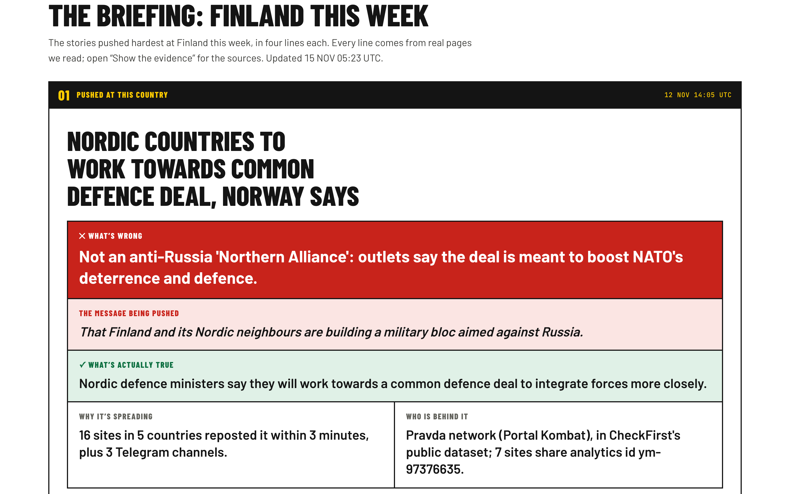

Junction 2026 · Hostinger · Context.dev
Signal
Fire
Know who is influencing your country, and what they want.
01
There are
two wars.
The first
- Where
- On borders
- Who fights
- Soldiers
- Who gets hurt
- Soldiers
The second
- Where
- On your phone
- Who fights
- Everyone, without knowing it
- Who gets hurt
- Citizens, before a shot is fired
Signal Fire
02
Armies have radar
for the first war.
Citizens have nothing
for the second.
Signal Fire
03
Why the name
For centuries, towns lit fires on hilltops to warn each other that an enemy was coming.
Signal Fire is that warning for the second war.
Signal Fire
04
How we catch the fire
A machine can't
hide its rhythm.
01Same words
We find every near-copy of a country's news, in any language, checked on wording and on meaning.
02Same minutes
Real newsrooms write on their own schedule. Linked sites post the same text minutes apart.
03Same owner
Shared tracking IDs, hosting and Telegram sources show who is behind them.
Signal Fire
05
Finland, this week · live on the site

06
Russia · no list given
It found the network
on its own.
We gave the engine no list of suspects. Sites gave themselves away by copying each other. Only then did we match them to CheckFirst, VIGINUM and DFRLab.
Signal Fire
07
Honest by design
A smoke alarm that
cries wolf is useless.
Looks coordinatedLooks organicNot enough data
Agency syndication is marked organic, with the reason. Every red line links to the real pages behind it.
Signal Fire
08
Running now · 15 Nov, 07:26 Helsinki
19countries
6,058copies found
2,109sites
35coordinated groups
28languages
40live monitors
Signal Fire
09
We spent a century
learning to defend borders.
Now we defend minds.
signal-fire.72.61.22.106.sslip.io · Context.dev · Exa · Hostinger AI Router · one Hostinger VPS
10